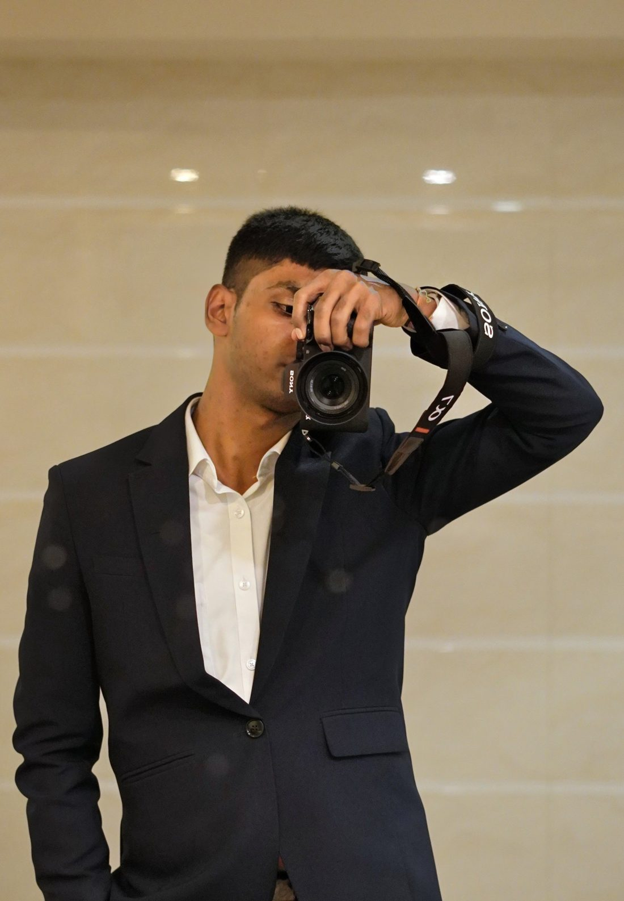
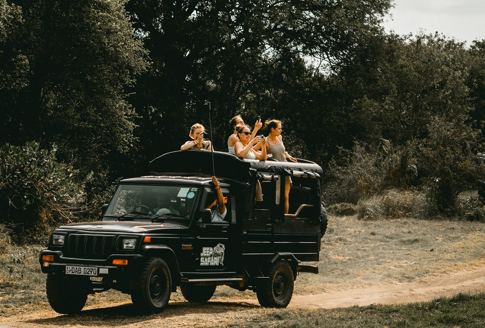
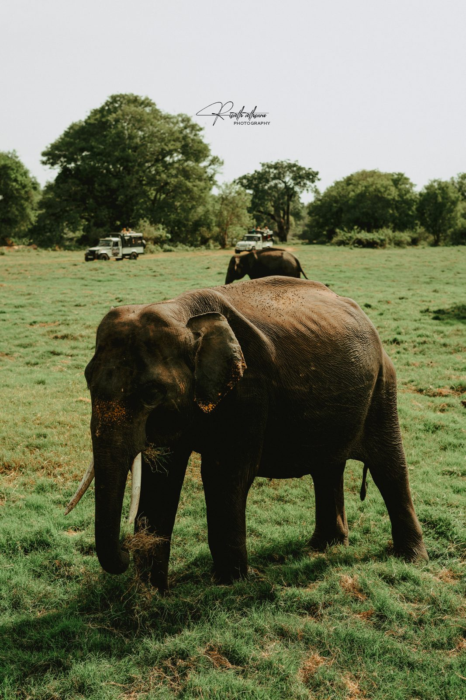
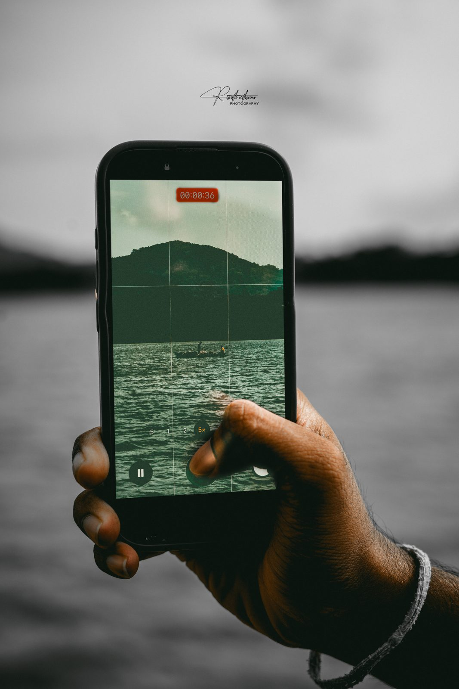
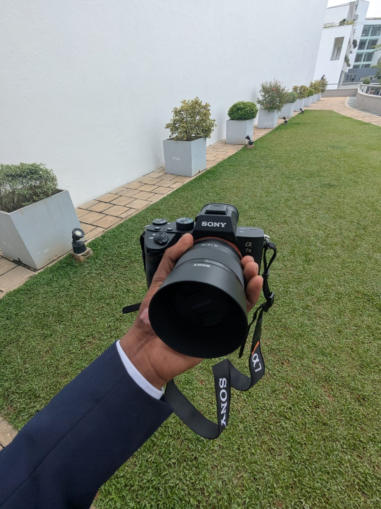

← Back to portfolio
Photography
Moments, framed
City nights, wildlife and quiet streets. Shot on a Sony A7 III as @risathxclicks.







Behind the lens
Sony A7 III
My camera for city nights, wildlife and street scenes. Photography started as a hobby, and I taught myself the same way I learned design: by shooting, looking and shooting again.
Follow @risathxclicks ↗